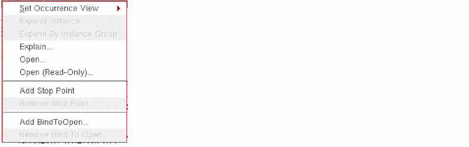
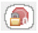
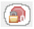
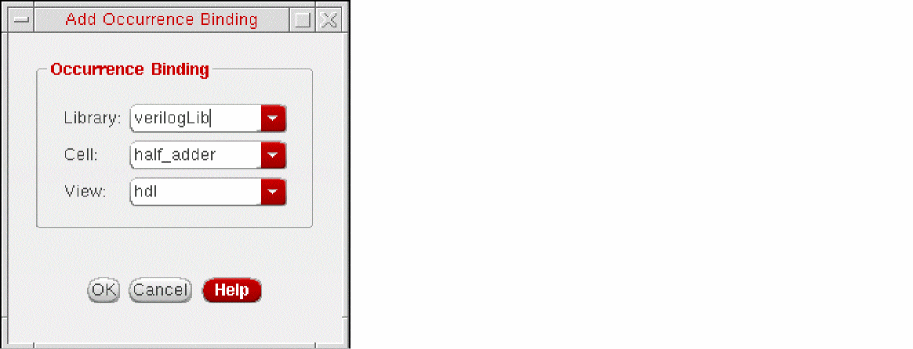

Defining Occurrence Bindings
You create an occurrence binding by specifying a library, cell, and view—or a text file—for a single object at a specific path in the design. Unlike cell or instance binding, occurrence binding applies only to one object.
When you do an occurrence binding, none of the other binding rules—such as inherited library lists or view lists—apply to that occurrence.
You can create an occurrence binding only in the tree view of the Hierarchy Editor, in the occurrence editing mode; you cannot create it in the table view.
If the library or cell is fixed by some other rules in the design data, you will not be able to change that binding and will only be able to set the view. For example, design data created by the Virtuoso schematic editor typically does not allow you to change the library and cell.
Creating an Occurrence Binding
-
A library, cell, and view
If the library and cell are fixed by some other rules in the design data, you can only set the view. - A source file
- A Verilog file
This section describes how to bind an occurrence to a library/cell/view. For information on how to bind an occurrence to a source file or a Verilog file, see Using Text Files in Configuration.
To specify a library/cell/view binding for an occurrence,
- Choose View – Tree to display the tree view of the configuration, if it is not already displayed.
-
Turn on the occurrence editing mode by clicking the Set bindings...on Occurrences button in the toolbar:
The tree view displays Target: Occurrence as the section header. -
Right-click the object to which you want to add an occurrence binding.
The following pop-up menu appears: -
From the pop-up menu, Select Set Occurrence View and select a view from the list of available views.
The Hierarchy Editor sets the view binding to the view you specify and the library and cell binding to the current library and cell.
You can also set the view by typing it in the View to Use column of the occurrence.
The object is now identified as an occurrence and a library/cell/view binding is set on it. The leaf node or tree node icon that was displayed for the object is replaced by the
icon (occurrence icon). If the object already had an occurrence stop point, the  icon is replaced by the 
icon (occurrence binding and stop point icon).
icon is replaced by the 
icon (occurrence binding and stop point icon).
Editing an Occurrence Binding
To edit an occurrence binding,
- Choose View – Tree to display the tree view of the configuration, if it is not already displayed.
-
Turn on the occurrence editing mode by clicking the following button in the toolbar:
The tree view displays Target: Occurrence. - Select the occurrence whose binding you want to change.
-
If you want to change only the view, do one of the following:
- Right-click the occurrence, select Set Occurrence View on the pop-up menu, and then select the new view from the list of available views.
- Type the new view in the View to Use column of the selected occurrence.
Skip the remaining steps in this section. -
If you want to change the library or cell,
- Right-click the occurrence.
-
From the pop-up menu that appears, select Set Occurrence View – Library/Cell/View.
The Add Occurrence Binding dialog box appears.If the library and cell are fixed for the design data, then the Set Occurrence View – Library/Cell/View option is not available. You can only specify a view binding. For example, Virtuoso design data typically does not allow you to change the library and cell. - Edit the library, cell, and view to which the occurrence is bound.
-
Click OK.
The dialog box closes.
To edit an occurrence binding to a source file,
- Choose View – Tree to display the tree view of the configuration, if it is not already displayed.
-
Turn on the occurrence editing mode by clicking the Set bindings...on occurrence button in the toolbar:
The tree view displays Target: Occurrence. - Right-click the occurrence whose binding you want to change.
-
From the pop-up menu, select Set Occurrence View – Source File.
The Enter the sourcefile Location form appears. For information on specifying a source file, see Using Source Files in Configuration.
To edit an occurrence binding to a Verilog file,
- Choose View – Tree to display the tree view of the configuration, if it is not already displayed.
-
Turn on the occurrence editing mode by clicking the Set bindings...on occurrence button in the toolbar:
The tree view displays Target: Occurrence. - Right-click the occurrence whose binding you want to change.
-
From the pop-up menu, select Set Occurrence View – Reference Verilog.
The Reference Verilog Modules form appears. For information on specifying a Verilog file, see Referencing a Verilog File.
Removing an Occurrence Binding
To remove an occurrence binding,
- Choose View – Tree to display the tree view of the configuration, if it is not already displayed.
-
Turn on the occurrence editing mode by clicking the Set bindings...on occurrence button in the toolbar:
The tree view displays Target: Occurrence. - Right-click the occurrence whose binding you want to remove.
- From the pop-up menu, select Set Occurrence View – <none>.
The occurrence binding is removed from the object. The  icon (occurrence icon) is replaced by the leaf or folder icon. The object is no longer uniquely identified, unless it also has an occurrence stop on it.
icon (occurrence icon) is replaced by the leaf or folder icon. The object is no longer uniquely identified, unless it also has an occurrence stop on it.
Related Topics
Return to top